Odoo Purchase
User Groups
Purchase team hierarchy from botton to top is as follows:
- Purchase: User
- Purchase: Administrator
Other groups involved:
- Administration: Settings
- Accounting: Invoicing
- Inventory: User
Purchase user can manage vendor records.
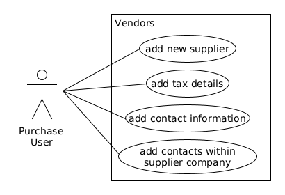Purchase user can manage product records.
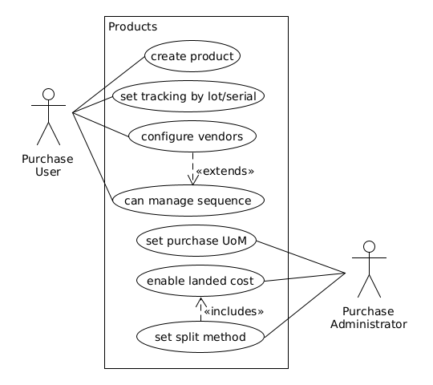Configuring vendors above in product is configuring supplier pricelists. Purchase user can configure following on supplier pricelists.
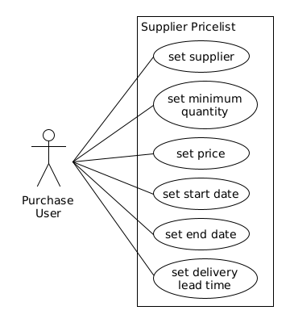ERP administrator does following configurations in purchase app.
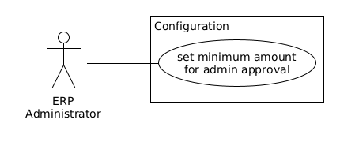States
Below diagrams depicts state change of purchase order based on purchase amount.
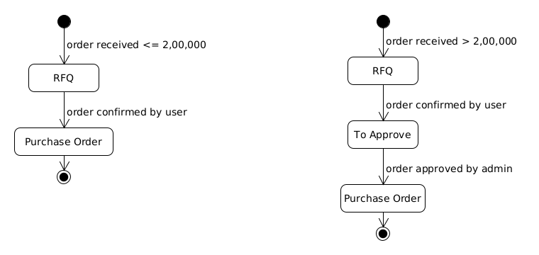Applications
Vendors
Purchase user can access vendors under Contacts application.

User can create Individual/Company type supplier, and can configure tax details.
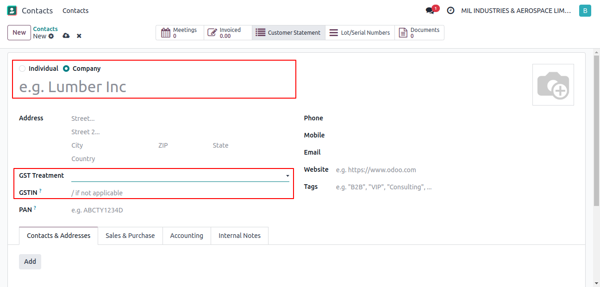User can set contact details.

User can add additional contacts within main supplier company contact.

Products
User can create new products under Purchase >> Products >> Products.
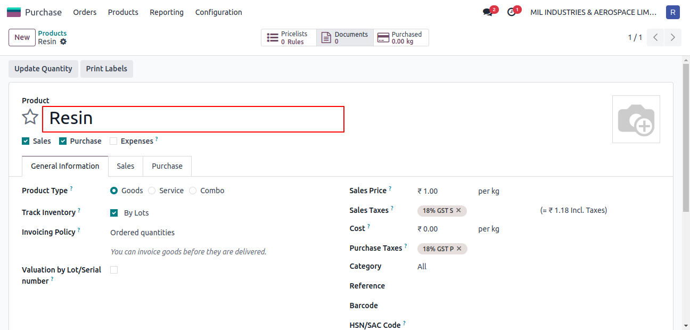User sets tracking by lots/serials.
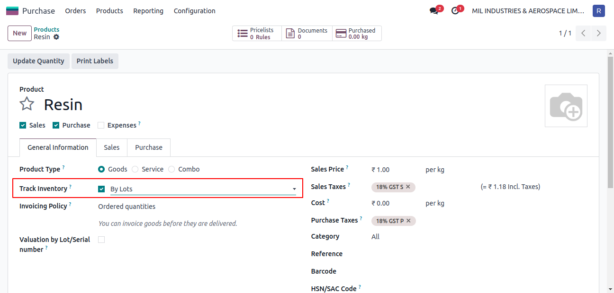User can configure multiple vendors on a product.
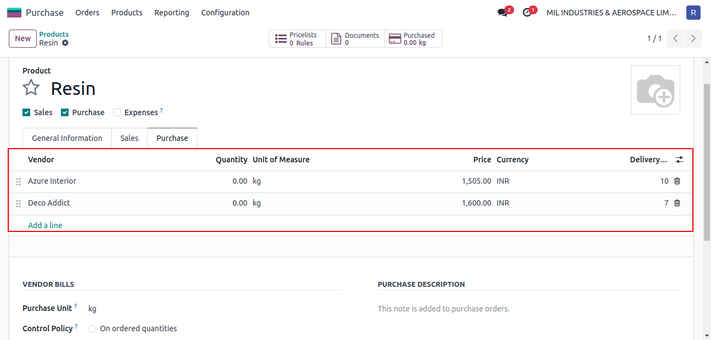Priority can be set on vendors.

Purchase administrator can set purchase UoM on product.
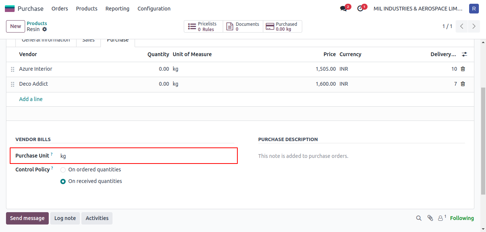Purchase administrator can convert only service type product to landed cost service type product.
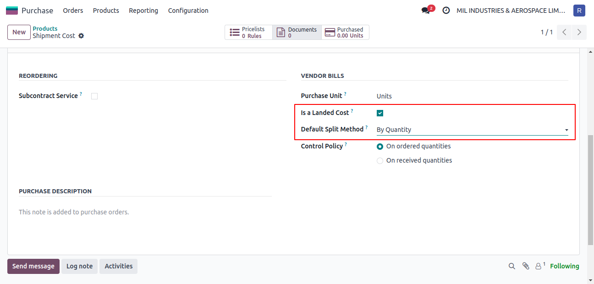Purchase Orders
Purchase user can access orders under Purchase >> Orders >> Requests for Quotation. User can confirm order using Confirm Order button.
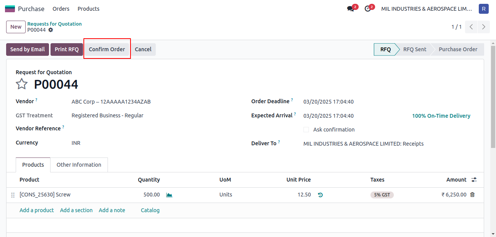Purchase administrator can approve order above minimum amount configured by ERP administrator using Approve Order button.
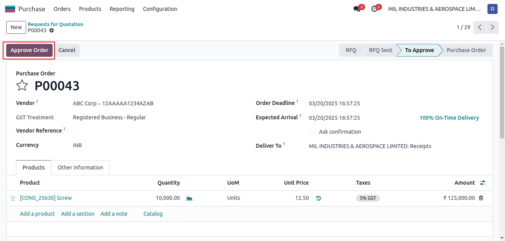Line-wise discounts can be added by filling discount column in purchase order lines.
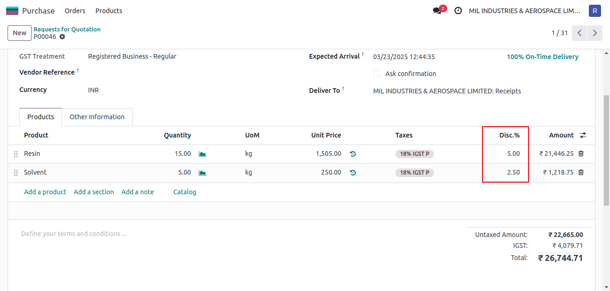Global discounts can be added by managing separate negative purchase order line.
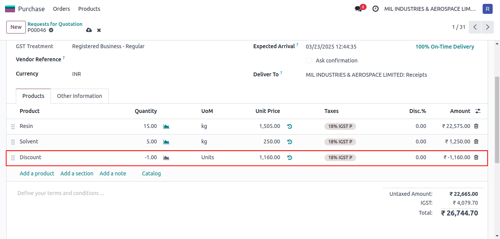Amendment to purchase order is tracked in chatter area of the form view.
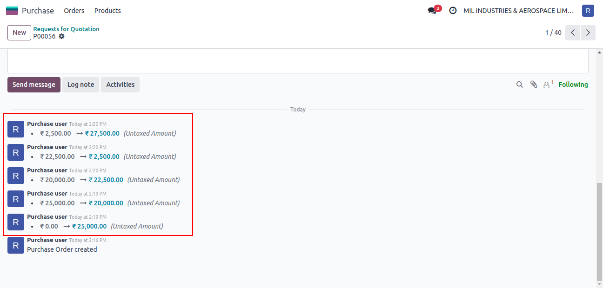Landed Costs
Purchase user selects landed cost product in purchase order.
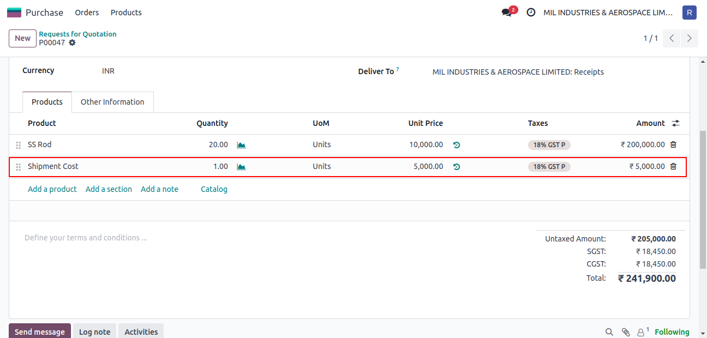Purchase user can create bill by clicking Create Bill button.
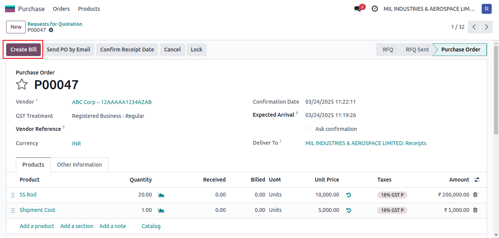Purchase user being in Accounting / Invoicing and Inventory / Administrator group can create landed cost record from vendor bill by clicking Create Landed Costs button.
Accounting / Invoicing group has access to vendor bill records.
Inventory / Administrator group has access to landed cost records.
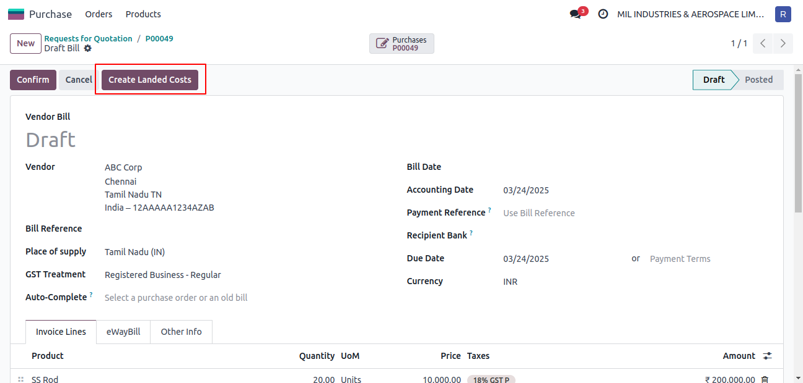On landed cost record, purchase user should select related receipt order.

Landed costs can be split by:
- Equal
- Quantity
- Current Cost
- Weight
- Volume
Configuration
ERP administrator sets minimum amount for additional approval of purchase order under Purchase >> Configuration >> Settings.
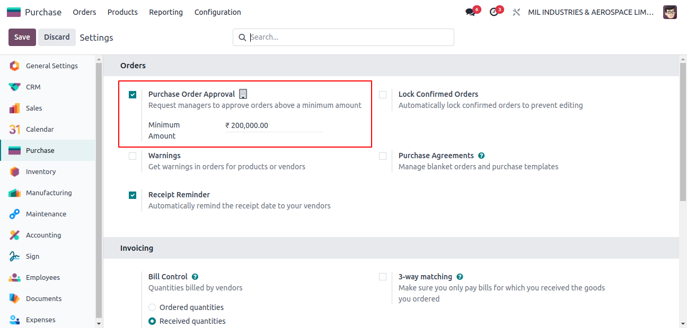